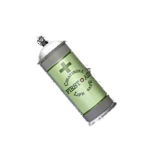

DISCOVER THE NEW FIRST AID SPRAY!
With its newest healing technology discovered by our scientists, remain constantly healthy during difficult missions.
What are the benefits?
- - A refreshing sensation spreading through your body
- - Immediate treating & anesthesia of wounds
- - Enhances perfomances during missions